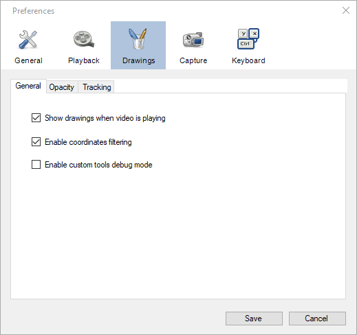
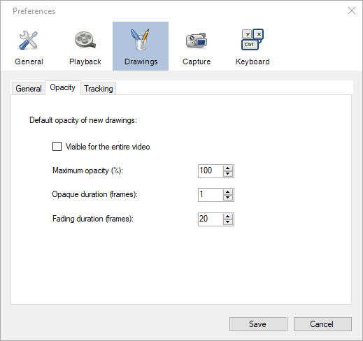
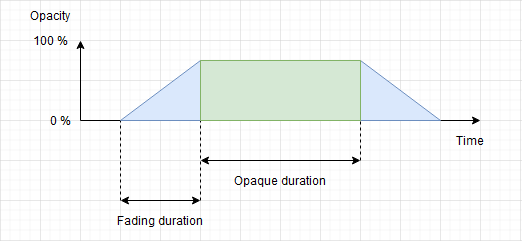
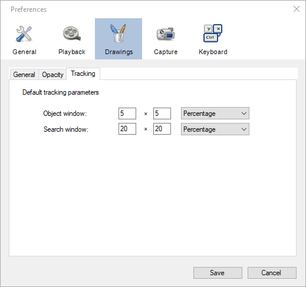

Drawings¶
General¶
Show drawings when video is playing¶
This option controls whether drawings are visible or not when the video is in continuous playback.
Enable coordinates filtering¶
This option controls the filtering of spatial coordinates for trajectories and tracked drawings. Due to the digitization process the raw coordinates are noisy and the resulting quantities, especially derivatives like speed and acceleration, are less accurate than they could be. Carefully filtering the coordinates remove a lot of this noise and provide more accurate measurements.
You can uncheck this option if you would rather export the raw coordinates and perform the filtering yourself.
Tip
For more in-depth information on the exact filtering approach and algorithms used, refer to the About page of the Linear kinematics window.
Enable custom tools debug mode¶
When this checkbox is ticked custom tools will display extra information about the name and relations of points, handles and segments. This option can be used by tool authors to facilitate design.
See also: List of tools.
Opacity¶
The options on this tab control the default visibility of drawings. Drawings can be customized independently by bringing their context menu and selecting options in the Visibility sub menus.
In the most general case a drawing’s visibility over time follows the following pattern:
Visible for the entire video¶
When this option is checked new drawings are visible for the entirety of the video. The opaque duration and fading duration options are ignored.
Maximum opacity¶
This option controls the opacity used during the opaque section. A value of 100% means the drawing will not let the background show through. A value less than 100% means the drawing will be somewhat transparent.
Opaque duration¶
This option controls how long the drawing stays at its maximum opacity level before fading out. This section starts at the keyframe onto which the drawing was added.
Fading duration¶
This option controls the duration of the ramps before and after the maximum opacity, until the drawing becomes completely invisible.
Tracking¶
The options on this page control the default parameters for trajectories and drawing tracking. Trajectories can also be configured independently by bringing their context menu and going in their configuration window. The tracking parameters of other drawings cannot be modified after creation.
Object window¶
The object window size defines the size of the patch of image around the tracked point that is being looked for in other frames. This should be set to be as small as possible in order to avoid including the background in the tracked patch.
Search window¶
The search window size defines the area in which the point is looked for. This should be large enough to compensate for the object change of position from one frame to the next. However search window too large can lead to the tracking algorithm picking a different object in another part of the image, if this object looks similar to the tracked object.
Tip
Use the trajectory tool configuration dialog to visually figure out the appropriate size of the object and search windows.